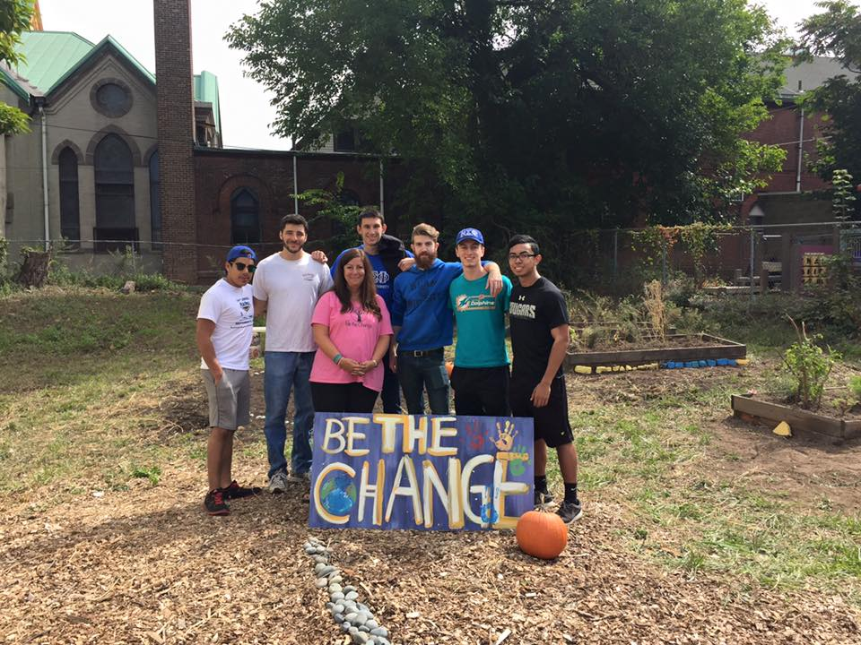
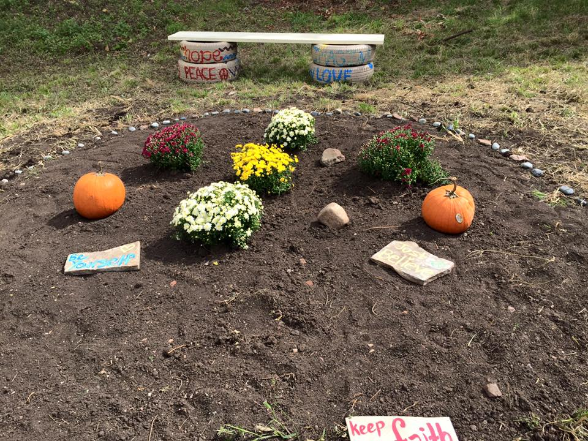
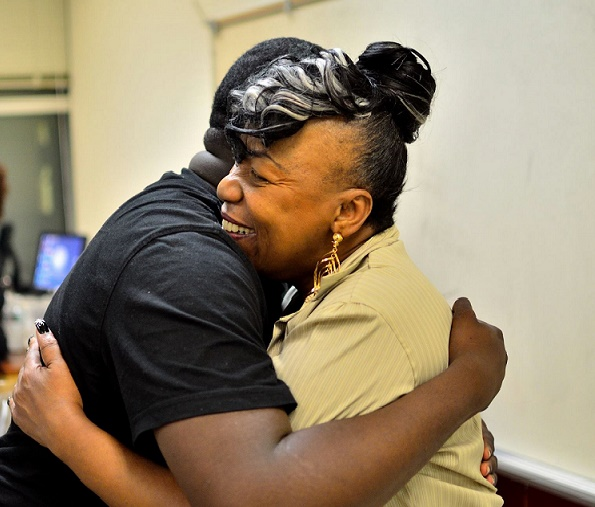

Be The Change Blog
Myrtle Avenue Transformation
 A Call for Change:
Imagine looking out of your bedroom window and seeing a half torn down hospital building with rubble hanging from all sides. Well, this was the view of a young boy that lives on Myrtle Ave in Newark, New Jersey.After hearing an inspirational presentation about Be The Change, a woman approached Dr. Norma Bowe at a Fortune Builders event. She asked Dr. Bowe if Be The Change could transform a lot on Myrtle Avenue in Newark. The woman recieved Dr. Bowe's favorite famous answer, “yes,” and Be The Change began planning.
Creating Community Change in One Day:
After members of the group surveyed the lot they knew that gathering a large team would be the only way to make real transformation happen. At first, the group feared the lot would not be addressed before the cold weather hit. After posting the event multiple times on social media, volunteers started to sign up. A fraternity group said, “Yes we will send a couple of our guys!” Next, a couple of other volunteers joined and said “what’s the address, I’ll be there.” This great news locked in the project.Dr.Bowe and a small team went to Home Depot to pick up supplies. They were gifted with a $75 gift card from the generous people at Home Depot in Edison, NJ. Paint, ply wood, paint brushes, garbage bags, and rocks filled the back of a volunteer’s truck. And so, on Sunday September 27th approximately 28 volunteers gathered in the lot with bagels, coffee, and a mission.
One corner of the lot was filled with weeds and garbage. After it was cleared the group discovered a pile of rocks. Unsure of what to do with the rocks, volunteers began writing things like ‘love, peace and hope.’ The pile became a piece of colorful artwork for the community.
Community Responses:
Soon people were walking by complimenting and commending the work that was being done. A woman with her small toddler in a stroller walked by; the little girl screamed “I like it!”Next, another woman was bringing candy, cold drinks, and even pizza for the entire group! Everyone was humbled and grateful for these responses.
Whenever Be The Change completes a project the physical space is never the same. It has more hope, more love, more peace, and more inspiration. On this day, Be The Change left a hand print on Myrtle Avenue. The volunteers gave the gift of transformation to the little boy that once looked out his window and only saw rubble and chaos.
Vertical Garden Launch

We are excited to announce the launch of our first local vertical garden. Today Be The Change NJ members and employees of Neuberger Berman installed a vertical garden at Liberty Hall, in Union New Jersey. The vertical garden was filled with vegetables and herbs which will aid in our organization's mission for food justice. Thanks to a generous grant from Nueberger Berman we look forward to being able to provide fresh fruits and vegetables to families and surrounding communities that lack this vital resource. This is garden is the first of several that will be implemented over the course of the summer. We are excited to install them and help our communities live a healthier lifestyle.
Gwen Carr: A Mother On A Mission
Gwen Carr lost her son and now she wants to help save your sons and daughters.
Many of us had the opportunity to speak to our mothers and or children on Mother’s Day, this was not the case for Mrs. Carr. She lost her son, Eric Garner, almost ten months ago during an altercation with the Staten Island police.
A few days before her son was killed she spoke to her son about an upcoming family gathering. The last words of their final conversation were:
Gwen Carr: “I’ll see you Saturday Eric. Love you.”
Eric Garner: “Love you too Ma.”
The loss is at the top of a list of major life changes that this mother is experiencing. In February, Mrs. Carr retired from the Metropolitan Transportation Authority after almost 23 years of service. She has now forged a new path, as an activist.
On Wednesday, May 6th she was the guest speaker in Dr. Norma Bowe’s Health and Social Activism class, at Kean University in Union, New Jersey. In a candid and emotional interview Mrs. Carr opened up about the day her son died, the aftermath and her new mission.
Can you walk us through the events of the day that your son died?
Gwen Carr: I was at work. In the afternoon I went on break and turned on my cell phone. It began ringing. The first call was someone telling me that something had happened with Eric and the police, but they didn’t have any details. When I hung up, I received another call telling me the same thing, but again no details. Just knowing something happened made me very anxious and nervous.
I called my husband and I told him what I had heard. He came and picked me up from work. I still didn’t know what the circumstances were. My husband knew, but he was trying to get me home before he told me. I kept questioning him during the ride home and finally he told me. I lost it. When I got home I couldn’t talk to anyone. I still didn’t know the circumstances of Eric’s death and I didn’t know about the video.
There was quite a bit of press. At about 11 or 12 p.m. my family decided to talk to one reporter from the Daily News. He took our statements and when he was done he informed us about the video. The next morning my brother-in-law got the paper and I lost it when I saw those pictures. (To this day I have not seen the video in its entirety. I just can’t look at it.)
People were coming from everywhere. Then we got a call to go meet Reverend Sharpton. We didn’t know him before then. After we met him, he told his staff, “See what the family needs and give them what they need.” That was a shock because he didn’t know us.
I know people say negative things about him, but to my family he has been a gem. People are putting in the paper that we have to pay him back, but that’s not true. He told us from the beginning, “You don’t owe us anything. We can’t bring your son back.”
To know I spoke to my son a few days earlier laughing and talking as usual it was just too much for me. It just hurts so bad to know that he’s not here anymore, especially with the circumstances of his death. He was not armed. He was not committing a crime. Yes he did sometimes sell loose cigarettes on the street, but at the time he wasn’t doing it. And even if he was the sentence for that is not death.
If he would’ve been a white man named Eric Garner in Scarsdale (NY) they would’ve given him a ticket/fine, and told him to stop selling cigarettes on the street.
My son’s death is senseless. Why kill a man for no reason? And it’s not just my son, it can happen to anyone. I wouldn’t wish this on another mother’s son. It’s heartbreaking and you’ll never get over it. The scenario plays over and over in my head. It will be with me for the rest of my life like a reoccurring nightmare, but in fact it’s worse than a nightmare because I never wake up. It’s always going to be there.
What is your opinion of the recent Time Magazine cover which suggests that nothing has changed for African Americans from 1968 to present day?
What was it like when you turned on the television and saw the rioting in Baltimore?Gwen Carr: There hasn’t been much change since the 1960s. They say we are in free America, but there’s nothing free in America for people of color and Latinos – they treat us so brutally. There is injustice in all races, but people of color suffer the most.
Gwen Carr: That was sad. I know they were angry because Freddie Gray was killed, but you don’t burn down where you live. You have to shop there. You have to work there. Your children go to school there. You can protest, but protest positively. There was already so little in the community, so why burn that down. People worked for years to build some of those businesses.
How do you feel about the Baltimore mother’s reaction to her son’s actions during the riot?
Gwen Carr: She has my vote. If it was my son I would feel the same way. You can’t be out there throwing rocks at the police. The police could gun you down. Look at what just happened, he could’ve been another statistic. I would’ve done the same thing she did.
The deaths of Trayvon Martin, Mike Brown, and your son Eric Garner have raised the blinds on the brutal policing of black men in American. Families like yours have stepped up and asked for accountability, yet despite the coverage, the protests, the circumstances of these deaths, despite creating a prevailing sense that the longstanding racial injustices against blacks is still prevalent, this continues to happen, as is the case with Freddie Gray. Why do you think this is case?
Eric’s death is a tremendous loss, but it has also led you onto a new path – activism. What is life like now?Gwen Carr: Some police officers think they are above the law, and I think that they are angry that regular citizens are stepping up and trying to show what’s actually wrong with our society. Our unarmed black men and boys are being brutalized by police for no good reason. I think they are trying to show that they still have power and control.
Gwen Carr: Life is changed for me. It has changed forever. I used to be a very low key individual. I went about my daily routine and kept to myself, but the death of my son it has really magnified the reality of how cruel and inhumane police officers are towards people of color. I heard stories before about what was going on, but it didn’t hit home. You feel bad when you see those and hear about these things, but you really don’t know until it actually happens to you.
After it happened to me, it was an awakening and I became much more aware of what was happening around me, across the country and the world. I’ve learned a lot since this happened to me. There was so much I was unaware of. It was so sad to learn about all these injustices. I now have an obligation to speak out, to march, to rally, to do whatever it takes until my voice is heard.
I feel like I have to do this. I have to try to wake people up. I want to talk to our young men and also older men to help prevent anything like this from happening to them.
What has the transition from working at the Metropolitan Transportation Authority (MTA) to being an activist on the front lines of something so important and necessary for our country been like?
Gwen Carr: It’s different, but you have to do what you have to do. You have to do what’s necessary in order to create change. I can’t create change by myself, but collectively with everyone’s help I think we can create change.
You’ve been marching and peacefully protesting since your son’s death. You even marched across the Edmund Pettus Bridge in Selma, Alabama to mark the 50th anniversary of “Bloody Sunday.” Do you think we will ever be able to stop marching?
Gwen Carr: I really hope so, but in order for that to happen we have to come together. All people have to come together. As long as we stay divided it’s not going to happen. We have to stop fighting each other. We have to stop killing each other. It’s senseless. We need to stop fighting over petty things and do what’s really important. What’s important is becoming united and standing up for what’s right.
If you could reach out to all the protestors, victims, and their families and friends what would you want to say to them about moving forward?
Gwen Carr: Let’s get this together. Yes sometimes we get mad and that’s where fires come from, but don’t burn down your town. Burn a candle for that a person who has fallen and then get out there and do something positive about it. I just can’t support violence. I want to approach it in a different way. We need to stay focused on the problem at hand. We have to do something positive to get the word out there. It doesn’t have to be marching, contribute in your own way to make a difference.
Eric Garner was a loving man. His mother found out the extent of his kindness after his death. People he had been helping came forward to speak about his kindheartedness. He helped the homeless, his friends and strangers. A local reverend who runs a food pantry told Mrs. Carr, “Whenever I saw your son (Big E) he would stop and talk to me, but when he was leaving he would never say “Goodbye.” Instead he would always say, “Spread the love reverend, spread the love.”
The excessive force in policing unarmed men is a paramount issue, which has led to the loss of too many lives. In addition there is a pervasive side effect: our culture’s desensitization to these violent scenarios. While there are those remain highly disturbed by the images, videos and media coverage, there is a growing number of people who flip through these images because the violence has invaded our society and metastasized it. We must not forget the permanent holes created by these injuries and deaths. These individuals deserve justice and we must demand it. The only way to stop these injustices is to demand accountability for those we have already lost.